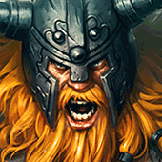

核心裝備
 三相之力
三相之力咒刃、生命與攻速都契合貼身持續輸出。
 死亡之舞
死亡之舞延後物理爆發，擊殺後回血可配合低血量增益連戰。
 史特拉克手套
史特拉克手套生命與護盾避免開大衝後排時被瞬間蒸發。
 自然之力
自然之力對法師陣容提供魔抗與追擊跑速。
 致死宣告
致死宣告補重創與穿甲，對高回復前排更實用。

Olaf · 免控追擊／低血量吸血型物理鬥士
先用斧頭減速與降甲，再決定是否開大。大絕後普攻與三技命中英雄能延長持續時間，所以不要在碰不到人的距離提早開；鬼步與斧頭拾取是維持追擊的關鍵。
本站評級理由：歐拉夫在 ARAM 最強的是開大後無視控制直衝後排，低血量時攻速與吸血越高，搭配鬼步很容易把長手陣容逼退。缺點是沒有真正的撤退位移，一旦大絕延長失敗或被風箏，會很快失去威脅。
6.3d 遊戲模式調整將歐拉夫治療 100%→120%。7.2a 的傷害輸出 100%→110% 明確位於 AAA ARAM 且未標註同步標準 ARAM，因此標準 ARAM 傷害仍以 100% 記錄。
咒刃、生命與攻速都契合貼身持續輸出。
延後物理爆發，擊殺後回血可配合低血量增益連戰。
生命與護盾避免開大衝後排時被瞬間蒸發。
對法師陣容提供魔抗與追擊跑速。
補重創與穿甲，對高回復前排更實用。

物理與普攻陣容下最穩的二級鞋。

三級鞋提供物理護盾，強化直衝後排的第一波承傷。

持續普攻與技能很快疊滿，放大長團輸出與續航。

長時間貼身能穩定提高傷害。

歐拉夫本來就會低血量作戰，收益非常穩定。

攻速讓普攻延長大絕與三技降冷卻更快。

使用鬼步／閃現後再補跑速，防止被風箏。

核心追擊召喚師技能，讓大絕期間持續碰到英雄。

越過前排或修正斧頭追擊角度。
1 技 > 3 技 > 2 技
主 1 技提升遠距減速與反覆撿斧輸出，次 3 技補真傷；大絕能點就點。
先用一技消耗與逼位，不要第一顆斧頭命中就無腦開大。等敵方主要控制交出或後排走位靠前，再鬼步進場。
三相＋死亡之舞後開始能正面追人。開大後優先普攻與三技英雄延長時間，斧頭撿得到就撿，撿不到也不要為了回頭而放掉後排。
選擇能實際黏住的後排，不一定要追最遠的射手。若敵方風箏很強，先打前排疊征服者與降甲，再等角度切入會更穩。
 黑色切割者
黑色切割者替換自然之力或致死宣告，快速疊減甲。
替換死亡之舞，增加魔抗與保命護盾。
 水星之靴
水星之靴二級鞋改水星之靴，後續升鎖鏈軍靴。
看遊戲卡片下方分類 → 點相同分類 → 看左側 S+／S／A。
大絕期間會長時間貼身普攻，命中特效與普攻縮技能都能穩定發揮。
鬼步與大絕進場最怕被風箏，額外跑速直接提高追擊成功率。
撿斧頭與三技能形成高頻技能循環，技能加速能提高持續壓力。
攻速與多次普攻能直接放大大絕期間的持續輸出。
普攻縮技能、處刑與保命類單卡都很符合一路追到底的節奏。
低生命時提高攻擊、雙防與全能吸血的系列效果與歐拉夫背水作戰非常契合。
v80.14.0 ARAM A 第五批：保留 6.3d 模式治療 120%；7.2a 的 110% 傷害為 AAA ARAM 專屬，不套用標準 ARAM。
ARAM 使用獨立於召喚峽谷的資料集；本站會把官方模式平衡、單線 5v5 特性與出裝／符文適配分開判斷，而不是直接複製峽谷配置。